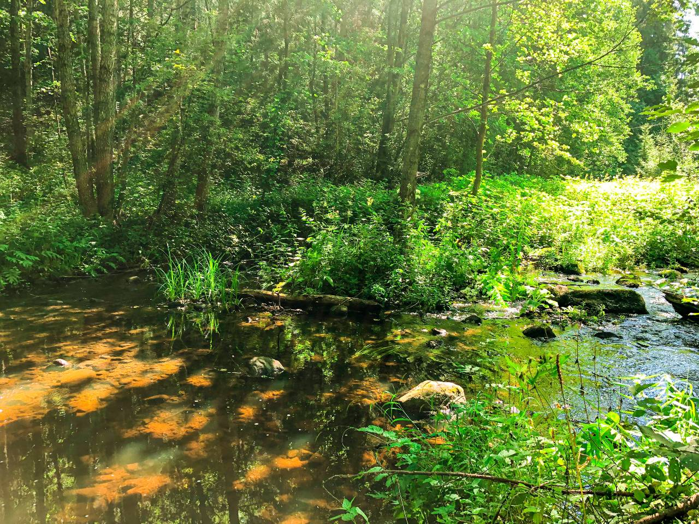
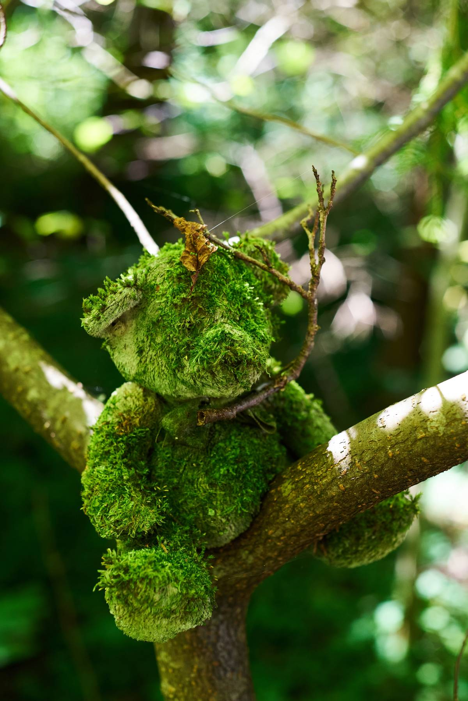

Ці глядзелі на вас калі-небудзь камяні? Каб апынуцца пад пільным поглядам вялізнага валуна, наведайце месца, якое называецца ўрочышча Кундры. Яно знаходзіцца каля вёскі Пешкаўцы на рэчцы Лынтупка. Калі ісці туды ад вёскі праз поле, у нізіне ў лясных зарасніках вы сустрэнеце паліцы велізарных замшэлых валуноў. Маляўнічымі грудамі яны навалены сярод старых елак і соснаў. Пейзаж нагадвае фільм са свету фэнтэзі ці казак пра троляў, якія скамянелі пры святле сонца, але ўначы абавязкова ажывуць! Відаць, што камяні ляжаць тут ужо шмат год.

Недалёка адсюль знаходзяцца курганныя могільнікі. Раней, у паганстве, людзі хавалі памерлых у курганах. Цяпер археолагі раскопваюць іх і знаходзяць шмат цікавага. Мясцовы краязнаўца Алесь даследаваў курган і выпадкова апынуўся на беразе Лынтупкі.

У рацэ ён убачыў вялізны валун, у якім высечана паглыбленне ў выглядзе вялікага вока, прыкметнага нават з берага. У многіх культурах вочы - сімвал пераходу ў іншасвет. Ён агледзеў гэты камень і ўбачыў, што вока глядзіць на бераг. Прайшоўшы па кірунку "погляду" каменя, ён выявіў на беразе яшчэ адзін незвычайны валун. На ім былі высечаны сімвалы: змяя, апалонік і вока, якое глядзіць у неба. Змяя і апалонік рэльефныя, выпуклыя і іх лёгка выявіць, счысціўшы мох з верхавіны каменя. Контур вока высечаны, як паглыбленне. Змяя – сімвал паганскай багіні Гельцыні, сястры багіні лёсу і дзетараджэння Лаймы, капішча якой таксама ёсць у гэтых мясцінах. Гельцыня апякуецца над медыкамі і дапамагае людзям перайсці ў іншасвет лёгка.

Апалонікі - сімвал зараджэння жыцця і знак багіні лёсу Лаймы, якая па павер'ях дапамагала жанчынам у родах. А вока - сімвал пераходу ў іншасвет. Відавочна, што гэтае месца было культавым, на ім праводзіліся рытуалы і абрады, звязаныя з гэтымі багінямі. А паколькі побач знаходзяцца курганныя могільнікі, хутчэй за ўсё гэта быў культ шанавання продкаў.
Запісала Алекс Працкевіч